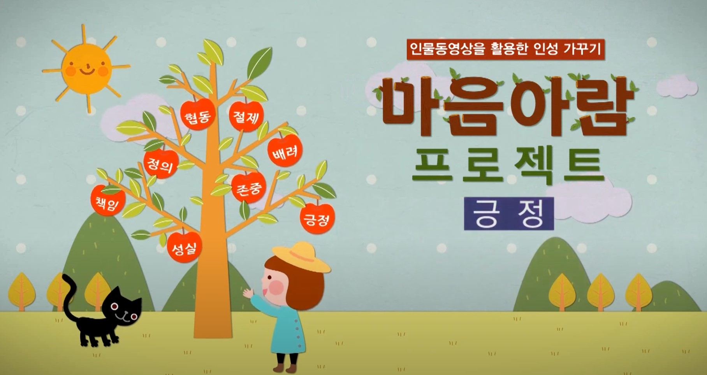

|
 |  |
 |
가상 공간에서 벌어지는 인격 살인(9분 17초) SNS 등 사이버공간에서 발생한 학교폭력, 집단 따돌림 문제에 대한 네거티브 콘텐츠(뉴스) 시청을 통해 경각심 전달 |
나를 위한 믿음, 자기효능감(6분 29초) 자기 자신에 대한 긍정적인 태도와 믿음 기르기 |
현이네는 저작권 가족(초등용) 엄마, 아빠, 그리고 오빠와 함께 사는 우리친구 현이. 현이네 가족은 ‘저작권 가족’ 이라는 별명이 붙어 있답니다. 왜 많고 많은 별명 중에 하필 ‘저작권 가족’ 일까요? 현이네 가족의 저작권 이야기. 어떤 이야기일지 이제 들어보자고요 (출처: 한국저작권위원회, https://www.copyright.or.kr) |
삼총사의 저작권 도장 수련기(중등용) 아무 생각 없이 다른 사람의 글, 게임, 콘텐츠들을 이용해 오던 장폭우, 박리, 그리고 나보아. 이 세 친구에게 ‘저작권 도장 수련’ 이라는 벌이 내려졌답니다. 듣기만 해도 특이한 도장인데 거기엔 더 요상한 사부님이라는 분이 계시네요 (출처: 한국저작권위원회, https://www.copyright.or.kr) |